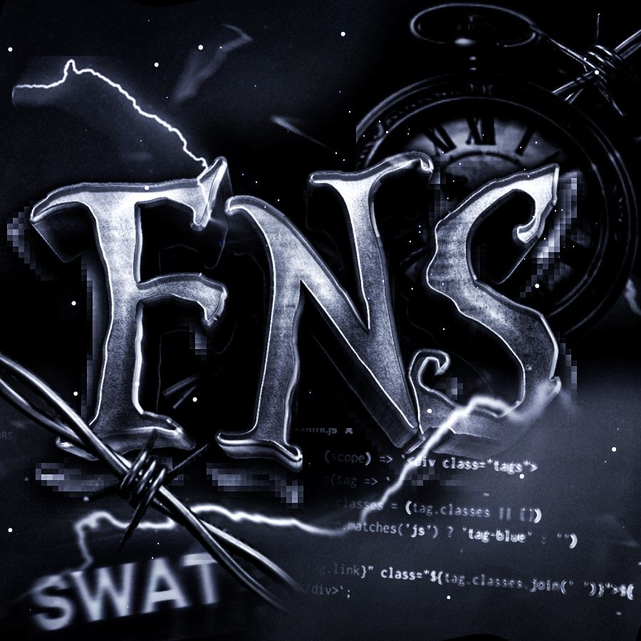

Konquest
FNIS Hub
Github
A propos de moi
Developpeur Full Stack. En recherche de collaboration.
Discord : @7z84

FNIS - Commu Cyber
Rejoindre
Mon Telegram
Rejoindre
Votre navigateur ne supporte pas l'élément audio.
üéµ Musique d'ambiance
Cliquez pour démarrer la musique de fond
Démarrer la musique